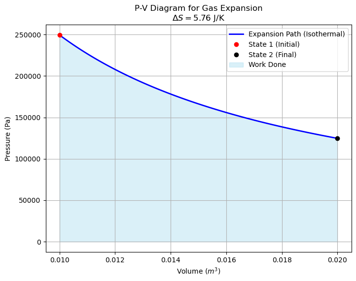

import numpy as np
import matplotlib.pyplot as plt
# --- 1. Problem Definition ---
# Calculate the entropy change for 1 mole of an ideal gas expanding
# from an initial state (T1, V1) to a final state (T2, V2).
#
# Assumptions:
# - Ideal Gas behavior (PV = nRT)
# - Constant Heat Capacity (Cv)
# Constants
R = 8.314 # Universal Gas Constant (J/mol*K)
# User-Defined Parameters
n = 1.0 # Moles of gas
Cv = 1.5 * R # Heat capacity at constant volume (monatomic ideal gas)
T1 = 300.0 # Initial Temperature (K)
V1 = 0.01 # Initial Volume (m^3)
T2 = 300.0 # Final Temperature (K) (Isothermal expansion for this example)
V2 = 0.02 # Final Volume (m^3)
# --- 2. Calculation ---
# The formula for entropy change of an ideal gas (molar basis) is:
# Delta_S = Cv * ln(T2/T1) + R * ln(V2/V1)
delta_s_molar = Cv * np.log(T2 / T1) + R * np.log(V2 / V1)
delta_s_total = n * delta_s_molar
# --- 3. Output Results ---
print(f"--- Process Conditions ---")
print(f"Initial State: T1 = {T1} K, V1 = {V1} m^3")
print(f"Final State: T2 = {T2} K, V2 = {V2} m^3")
print(f"Gas Properties: n = {n} mol, Cv = {Cv:.2f} J/mol*K")
print(f"\n--- Entropy Calculation ---")
print(f"Change in Entropy (Delta S): {delta_s_total:.4f} J/K")
# --- 4. Visualization (P-V Diagram) ---
# Create an array of volumes from V1 to V2 for plotting
v_vals = np.linspace(V1, V2, 100)
# Calculate Pressure for an Isothermal process (P = nRT/V)
# Note: If T changed, we would need to define the path (e.g., adiabatic).
# Here we assume T is constant for the plot path just for visualization.
p_vals = (n * R * T1) / v_vals
plt.figure(figsize=(8, 6))
plt.plot(v_vals, p_vals, 'b-', linewidth=2, label='Expansion Path (Isothermal)')
plt.plot(V1, (n*R*T1)/V1, 'ro', label='State 1 (Initial)')
plt.plot(V2, (n*R*T2)/V2, 'ko', label='State 2 (Final)')
plt.fill_between(v_vals, p_vals, color='skyblue', alpha=0.3, label='Work Done')
plt.xlabel('Volume ($m^3$)')
plt.ylabel('Pressure (Pa)')
plt.title(f'P-V Diagram for Gas Expansion\n$\Delta S = {delta_s_total:.2f}$ J/K')
plt.legend()
plt.grid(True)
plt.show()--- Process Conditions ---
Initial State: T1 = 300.0 K, V1 = 0.01 m^3
Final State: T2 = 300.0 K, V2 = 0.02 m^3
Gas Properties: n = 1.0 mol, Cv = 12.47 J/mol*K
--- Entropy Calculation ---
Change in Entropy (Delta S): 5.7628 J/K